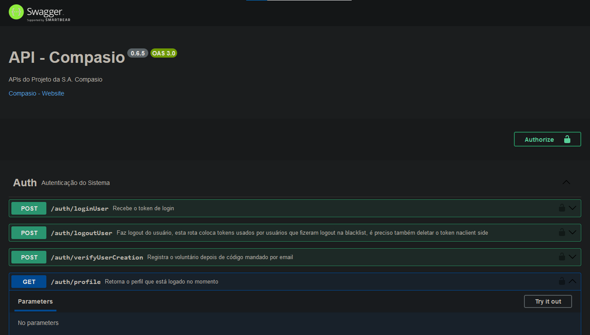

Revista Literária
Desenvolvimento de uma revista literária interativa, onde foram abordadas obras literárias clássicas brasileiras. O projeto envolveu resenhas, artigos e discussões sobre as influências e o impacto das obras na sociedade brasileira.
Podcast
Criação de um podcast interativo com o escritor João Bandeira, onde discutimos temas como suas obras e a evolução da literatura brasileira contemporânea.
Matriz
Exploração dos conceitos de matrizes, abordando sua definição, operações e aplicações matemáticas. A atividade foi focada na teoria, com a apresentação de exemplos gráficos para facilitar o entendimento.
Bem-estar Digital
Análise do impacto do uso excessivo de smartphones, utilizando conceitos estatísticos para medir e analisar os hábitos digitais. A atividade abordou a importância de equilibrar a tecnologia com o bem-estar físico e mental, apresentando dados coletados e reflexões sobre como melhorar a relação com os dispositivos digitais.
Mapa Interativo
Desenvolvimento de um mapa interativo sobre as rotas de imigração dos venezuelanos, com informações detalhadas sobre as condições de viagem e as dificuldades encontradas ao longo do trajeto. O projeto teve como objetivo aumentar o entendimento sobre o impacto da migração.
O Grande Ditador
Análise crítica do filme "O Grande Ditador", de Charles Chaplin, com foco nos aspectos políticos e sociais abordados no contexto dos regimes totalitários. A atividade envolveu uma reflexão sobre como o cinema pode influenciar a percepção crítica dos espectadores em relação aos governos opressores.
EcoCraft
Criação de um ecossistema e seus componentes no minecraft, essa atividade combinou a criatividade com a ilustração de termos usados na biologia
Pilha com limão
Criação de uma pilha com limão e moedas, transformando energia química em energia elétrica, colocando em prática os conhecimentos adquiridos em aula
Compasio
Trabalho para o curso técnico em desenvolvimento de sistemas integrado ao ensino médio. A Compasio é uma plataforma proposta para conectar voluntários, ou pessoas que querem ser voluntários, com ONGs de todo o Brasil, podendo se voluntariar, doar, e divulgar seus projetos. Desenvolvi o frontend da aplicação, onde pude desenvolver ainda mais meus conhecimentos de React, CSS, e Axios, além de desenvolver meus conhecimentos nas etapas de modelagem de software e bancos de dados. Foi um projeto de bastante aprendizado e muito trabalho.

Sonar
Aplicativo de música para o curso técnico em desenvolvimento de sistemas. A Sonar é um app que utiliza como tecnologias o React Native, ExpressJS e o PostgreSQL.